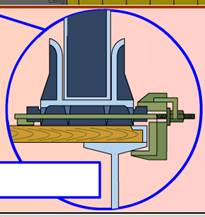

При закреплении по шестому способу технику крепят четырьмя струбцинами-растяжками МК-765 или четырьмя струбцинами С-765.
Струбцины-растяжки МК-765 и струбцины С-765 допускается применять для закрепления на железнодорожных платформах при транспортировании на платформах железных дорог.
Струбцины – растяжки
Струбцина-растяжка представляет собой круглый стержень с захватом на одном и стопорной гайкой на другом конце. По стержню свободно перемещается скоба с фиксатором стопорной гайки.

рис. Закрепление машин струбцинами-растяжками
Порядок размещения и закрепления машин струбцинами-растяжками МК-765.
1. Закручивают до отказа стопорную гайку и накладывают на нее фиксатор.
2. Верхний рог струбцины надевают на ширину трака гусеницы против второго и предпоследнего опорных катков.
3. Нижний рог струбцины устанавливают на полку боковой балки платформы.
4. Стопорный болт заворачивают монтировочным ломиком или ключом до отказа и обязательно стопорят контргайкой, имеющей над нижним рогом струбцины.
Струбцина
Струбцина представляет собой металлическую скобу со стопорным (зажимным) болтом.
Закрепление машин струбцинами
1. Верхний рог струбцины надевают на шип трака гусеницы против второго и предпоследнего опорных катков.
2. Нижний рог струбцины устанавливают на полку боковой балки платформы.
3. Стопорный болт заворачивают монтировочным ломиком или ключом до отказа и обязательно стопорят контргайкой, имеющейся над нижним рогом струбцины.
4. Каждую машину дополнительно закрепляют от поперечного смещения 12 скобами или двумя боковыми брусками.
Подготовка машины к погрузке
Для закрепления ВГМ на платформе перед погрузкой необходимо:
— натянуть гусеницы как для движения по шоссе;
— тщательно очистить от грязи, а зимой от снега и наледи;
— проверить исправность тормозной системы и стопоров башни;
— привести в положение для транспортирования по железной дороге в соответствии с инструкцией по эксплуатации.
Порядок размещения и закрепления ВГМ на платформе
1. Машину устанавливают симметрично продольной оси платформы.
2. Каждую машину закрепляют четырьмя струбцинами или струбцинами – растяжками, устанавливаемых против вторых и предпоследних опорных катков.
Под траки гусениц, находящихся под вторыми и предпоследними опорными катками, вводят стержень с захватом. Поворачивая стержень вокруг его продольной оси (в любую сторону), устанавливают захват на верхнюю полку трака. Устанавливают верхний рог скобы на трак, нижний – на полку боковой балки платформы.


3. Каждую машину дополнительно закрепляют от поперечного смещения 12 скобами или двумя боковыми брусками.
Подготовка погруженных машин к перевозке
Для перевозки погруженной и закрепленной ВГМ на платформе, необходимо:
— поставить на передачу заднего хода и затормозить;
— рычаг коробки передач и педаль тормоза после этого опломбировать;
— рычаг подачи топлива установить в нулевое положение.